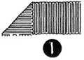
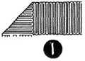

Select any picture to view an
enlargement in a new window
1952—How to Make Hats
by Ruby Carnahan
Ribbon Cocarde
RIBBON COCARDE
Use any width grosgrain ribbon to make Cocarde. 1 1/2 to 2 yards of ribbon is required to make ribbon Cocarde, depending on size desired.
(Illus. 1 and 2) Turn ribbon down on each side to make a point, then fold
ribbon in center (Illus. 3), bringing these folded sides together, sew in lower
point.
2) Turn ribbon down on each side to make a point, then fold
ribbon in center (Illus. 3), bringing these folded sides together, sew in lower
point.
Turn ribbon back and turn side down making a point again, (Illus. 4 and 5)
and folding in center bringing folded sides together (Illus. 6) and sew in lower point (Illus. 7).
Repeat in this manner until you have enough folded ribbon points to make the size Ribbon Cocarde you want (Illus. 8). Cut ribbon off and join ends and sew together in lower corner.